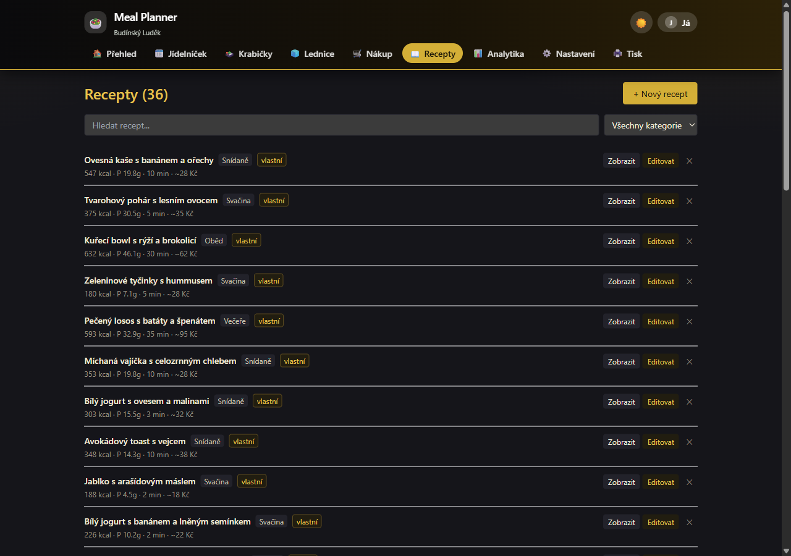

🥗Meal Planner
My own meal planner — a first-run wizard and a one-click weekly meal-box plan (Weight-loss / Cheap-week / Quick-for-work modes), macros, a shopping list, and a „why is this here?" explanation for every meal. Lock favourite meals, variety control, fridge & expiry awareness, deduct what I already have from the shopping list, a printable Sunday meal-prep plan. Optional live Rohlík link, light & dark mode, silent auto-update. No account, no cloud, all local.
React 18 TypeScript Vite 5 Tailwind Tauri 2 Windows (.exe)
What it does
Why it exists: I tried several mainstream diet apps (MyFitnessPal, Yazio, Lifesum…) and they all annoyed me. Either they wanted an account and pushed ads, or didn't know Czech meals, or forced a specific nutrition ideology. This one runs only in my browser — profile lives in localStorage, no server sees my weight, calories, or what I'm eating today.
How it works: A first-run wizard walks me through setup (name, age, height, weight, activity, goal, diet, budget). The app computes my daily calorie need (Mifflin-St Jeor + activity multiplier). For weight loss it recommends an asymmetric deficit; for muscle gain it prioritizes higher-protein recipes.
One-click weekly plan: A „Generate week" button builds 7 days × 5 meals within ±10% of target. I pick a mode — Weight-loss, Balanced, Cheap week (prefers cheaper recipes) or Quick for work (short prep, box-friendly). Every meal has a „Why is this here?" block explaining the pick (calories, protein, cheap, quick, uses fridge…). I can lock favourite meals so regeneration keeps them, and the app watches weekly variety („Swap similar meals").
Sunday meal-prep + shopping: A printable „what to cook on Sunday for the whole week" overview — what to batch-cook, a timeline, storage, boxes per day. The shopping list sums the week's ingredients and deducts what I already have in the fridge (safe units g/ml/pcs only; otherwise flagged „check manually"). Export to CSV or print.
Fridge: Track what I have at home with fuzzy autocomplete (Levenshtein ≤2 typos), expiry dates with a banner (≤3 days). The dashboard shows what's about to expire and which recipes I can cook from the current fridge (≥50% ingredient coverage).
Live Rohlík integration (optional): If I shop at Rohlík, I sign in right inside the app and it loads live prices from my account. From the weekly plan it builds a cart proposal and shows total vs minimum order vs delivery. Items are added to the cart only after my confirmation — the app never submits the order (checkout / payment) itself. The password stays local on my machine, never in the browser or the code (everything except adding to cart is read-only).
Light & dark mode: A 🌙/☀️ toggle — an elegant black-gold dark theme and a light one, the choice is remembered.
Local web + Windows app + silent update: The web runs in the browser (data in localStorage), plus a native Windows app (Tauri 2 + local Python sidecar) that updates itself silently to a new version (after confirmation, no password needed). No app store, no telemetry.
Key features
- First-run wizard — 6 steps (details, goal, diet, cooking, budget, output), skippable, offline. „Run wizard again" in Settings.
- „Generate week" + modes — one click: Weight-loss · Balanced · Cheap week · Quick for work. Post-generate summary (kcal, protein, price, avg prep time).
- „Why is this here?" — per-meal explanation from data only (calories, high protein, cheap, quick, box-friendly, uses fridge, no repeats).
- Meal locking + variety — lock a favourite, regeneration keeps it; „Weekly variety %" + „Swap similar meals".
- Sunday meal-prep print — what to batch-cook, timeline, storage (always „check manually"), boxes per day, shopping with fridge deduction.
- Auto-generated weekly plan — Combo search for 7×5 meals, daily kcal within ±10% target. Repeat-recipe penalty for variety.
- BMR/TDEE calculator — Mifflin-St Jeor formula + activity multiplier. Asymmetric deficit/surplus by weekly weight change.
- Recommended target banner — When metrics shift the recommended kcal, app offers „Use recommended“ (never a silent change).
- Weight tracking — Own SVG chart without external library, history in localStorage. No medical claims.
- Loss/gain optimizer — Weight loss → prefers higher-protein recipes. Muscle gain → same plus tighter kcal target.
- Fridge + recipe matcher — Stock tracking with food_db lookup, fuzzy autocomplete (Levenshtein ≤2), expiry sorting, low-quantity warnings, dashboard widgets (top expiring + cookable).
- Shopping list with export — Aggregates ingredients from weekly plan, groups by category, CSV or print.
- Live Rohlík integration (optional) — Sign in inside the app → live prices from your account → cart proposal from the plan. Items added after your confirmation; checkout & payment are never submitted by the app. Password stays local, otherwise read-only.
- Light & dark mode — 🌙/☀️ toggle, black-gold dark theme, the choice is remembered.
- Local web + Windows app + silent update — Web runs in the browser (data in localStorage), plus a native Windows app (Tauri 2 + Python sidecar) with silent auto-update to new versions.
Screenshots



Status
Working, v0.8.0 — UX Functional Upgrade (June 2026): first-run wizard, „Generate week" + modes (Weight-loss / Cheap / Quick), „Why is this here?", meal locking, variety control, smart fridge + shopping deduction, Sunday meal-prep print. 338 unit tests PASS, 37 recipes, Tauri 2 + Python sidecar with silent auto-update. Local web + Windows app, no cloud, no account, no telemetry.